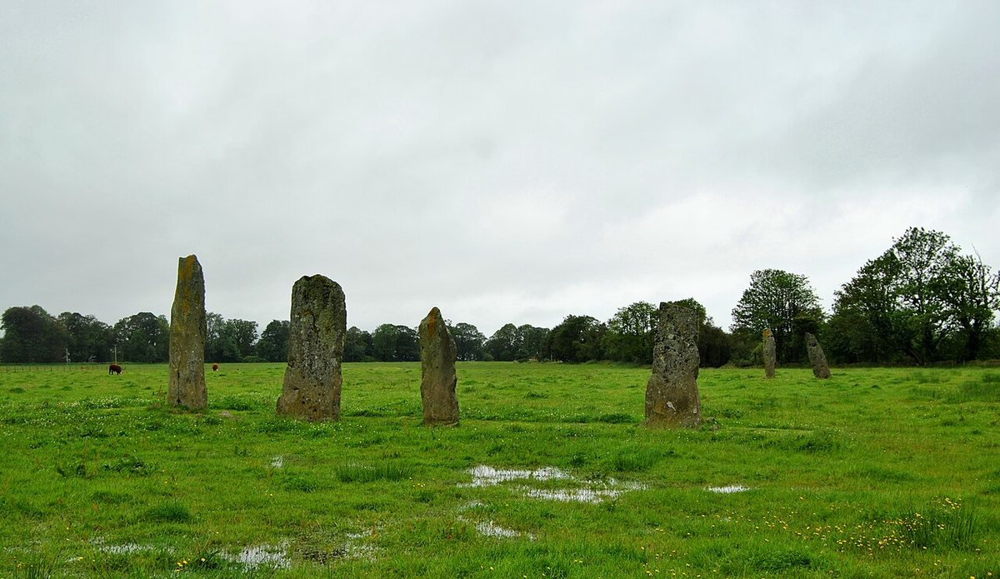

Kilmartin Museum’s map of the glen and its sites ↗
The museum map locates all five main cairns, nearby standing stones and rock art, the lower wetland, the River Add and Dunadd.
Deep dives / Europe & Mediterranean
From Kilmartin village, a line of cairns follows the broad valley floor. Standing stones and carved rock lie nearby, and farther south the River Add passes Dunadd. Builders returned to some of these places many times. The valley landscape helps place the monuments in relation to each other while their excavated sequences distinguish when and how people used them.
This guide covers the Neolithic and Bronze Age cemetery, stone settings and rock art of Kilmartin Glen, the evidence for later settlement and the early medieval stronghold at Dunadd.

Approximate locations from Kilmartin village along the glen, River Add and Mòine Mhòr toward Cairnbaan and Achnabreck. Nearby points mark individual cairns rather than the extent of the cemetery.
Modern context and medieval churchyard
The village and churchyard are next to the north end of the prehistoric cemetery. [2] [1]
56.13°, -5.49°Bronze Age
The northernmost large cairn of the linear cemetery, immediately west of the village. [5] [7] [1]
56.13°, -5.49°Bronze Age
A burial cist’s capstone carries many cup marks and two axe motifs. [6] [1]
56.13°, -5.49°Bronze Age
In the middle of the cemetery, the cairn contains two cists, with axe carvings in one. [7] [1]
56.13°, -5.49°Neolithic with Bronze Age additions
A four-part chamber survives within the oldest of the five main cairns. [8] [1]
56.12°, -5.50°Neolithic–Bronze Age
Timber and stone settings and later burials preserve overlapping building phases. [3] [4]
56.12°, -5.50°Prehistoric
Several stones survive in the fields east of Temple Wood, with carvings on some of the uprights. [10] [2] [1]
56.12°, -5.50°Bronze Age
The southernmost of the five main cairns yielded rare axe carvings in a stone cist. [9] [1]
56.12°, -5.50°Early Bronze Age, engravings possibly earlier
Deer and other animal engravings survive on the underside of a capstone in the burial cairn. [12] [13]
56.11°, -5.49°Prehistoric, multiple phases
Rows of stones stand near a cairn and a ditched burial monument farther south. [11] [1]
56.11°, -5.49°Prehistoric
Cup-and-ring motifs occupy natural rock outcrops near Dunchraigaig and Ballymeanoch. [15] [1]
56.12°, -5.49°Prehistoric burials, later settlement
Excavations on a gravel terrace identified cists, Iron Age timber roundhouses and later activity. [17]
56.12°, -5.51°Iron Age and early medieval phases
The fort above the Add and the wetland became a power center in Gaelic Dál Riata. [16] [1]
56.09°, -5.48°Landscape context
The wetland spreads across the lowest part of the landscape before the River Add reaches the coast. [1] [18]
56.09°, -5.53°Broadly late Neolithic–Bronze Age
Large cups, rings and spiral motifs occupy several outcrops on a wooded hillside. [14] [1]
56.06°, -5.45°The surviving cairns form a line about two kilometers long. That spatial pattern brings together structures of different ages. At Nether Largie South, an older chamber was incorporated into a reworked mound with later cists. Across the field at Temple Wood an earlier timber setting and two areas of stone construction preceded or overlapped later funerary activity. Excavation can date the relationship between features more securely than the year individual stones were raised. [7] [8] [3] [4]
| Date | Change or site | Basis for dating | Sources |
|---|---|---|---|
| 4th millennium BCE | The earliest chamber and settings in the glen. | Nether Largie South preserves a Neolithic chamber. At Temple Wood, excavated traces mark a timber setting. | [8] [3] |
| Around 3000 BCE | Stone is set at Temple Wood. | Excavation identified uprights and the partial replacement of the earlier timber setting. | [3] [4] |
| Late 3rd–2nd millennia BCE | Further cairns, cists and monuments are built and reused. | The glen’s linear cemetery and Dunchraigaig have multiple deposits and architectural phases. | [7] [9] [12] |
| 1st millennium BCE and later | Timber roundhouses and other activity at Bruach an Druimein. | Postholes and associated deposits identify later use of the gravel terrace. | [17] |
| Around 500–800 CE | Dunadd’s prominence in Dál Riata. | Archaeology and written records identify an early medieval fort and craft center. | [16] |
| 2020–2021 CE | Animal engravings are identified and announced at Dunchraigaig. | Survey and examination documented deer and other forms within the cairn. | [12] [13] |
People burying their dead in the glen sometimes altered older monuments. Temple Wood’s stones were linked with smaller slabs as the site accumulated new burials. Grave objects included a decorated Beaker and arrowheads. At Ballymeanoch a different combination of carved uprights, a kerbed cairn and a ditched monument occupies ground at the southern end of the cemetery area. These groupings make sense at valley scale while leaving the dates and purposes of some individual stones uncertain. [3] [4] [11]
At Achnabreck, pecked cups, concentric rings and spirals cover outcrops. Other carvings occur on portable slabs or standing stones. At Nether Largie North an engraved stone capped a burial cist, showing that the stone’s latest use was in the cairn. Whether the carvings were added for that burial or a marked slab was reused remains a separate question. The animal forms at Dunchraigaig are especially unusual. Their position on a capstone helps constrain their age, even though no direct date for the act of carving is available. [14] [6] [13]
The large mounds make burials highly visible on today’s valley floor. Houses built in timber leave a different record. At Bruach an Druimein, excavation revealed the postholes of Iron Age roundhouses and material associated with later metalworking. Earlier prehistoric activity is suggested by worked stone and burnt deposits, but evidence for dwellings contemporary with the earliest monuments is less secure. The excavation therefore adds to a long settlement history, while its best-defined houses belong to a later period. [17] [18]
Dunadd stands above the River Add and Mòine Mhòr. In the early medieval period it was a stronghold associated with Dál Riata. Finds from metalworking and imported pottery place the fort in networks beyond the glen. A carved footprint and basin have been interpreted in relation to royal inauguration. In the much earlier monument landscape, past sea-level models also suggest different coastal and wetland approaches than those visible today, although the exact routes to individual sites remain uncertain. [16] [18] [1]
Open the source maps for their original detail, legends and dates. Their coverage and reproduction terms belong to the issuing institution.
The museum map locates all five main cairns, nearby standing stones and rock art, the lower wetland, the River Add and Dunadd.
The archaeological study compares regional site distribution, terrain and possible prehistoric shorelines with a similar landscape on Lewis.
Historic Environment Scotland’s designation includes a measured extent and the relationship of the excavated circles and cairns.
Open this era on global Explore ↗ Open Europe & Mediterranean atlas ↗ Climate, sea level & ice-sheet context ↗
Sources checked and linked above; geological and historical dating methods follow the primary papers.